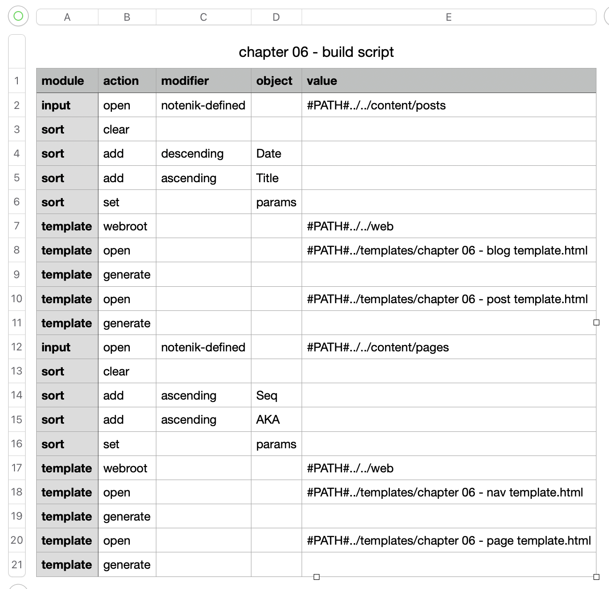

6. Adding a blog ↑
6.9. Review the script file
As perhaps you might have noticed by now, it is the Notenik script file that drives all of the action of building your site.
So let’s start by looking at the scripts file named Chapter 06 - build script.tsv.
This is what it should look like, when viewed in the Numbers app.

Note that we’re going to start by opening the posts collection, and then sorting it in descending order by Date, so that the most recent posts will appear at the top.
Then we will generate output with two merge templates.
Following this we we will open the pages collection, and then sort it using the Seq field. This should look familiar.
Now let’s look at the merge templates.
Next: 6.10. Review the blog template